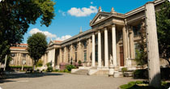

| Ressam,arkeolog Osman Hamdi beyin kurucusu olduğu müze 13 Haziran 1891 de Müze-i Hümayun ismi ile açılmıştı. 1902 ve 1908 tarihlerinde yan kanatları, yüzüncü kuruluş yılında 1991 de modern büyük bir bölüm eklenmiş ve yeni düzenlemeler yapılmıştı. Abidevi binanın mimarı Vallaury idi. Giriş karşısında iri ve ürkütücü Tanrı Beş heykeli yerleşmiştir. Sağ tarafta Antik çağ heykelleri salonları uzanır. Konforlu, güzel bir teşhirde tamamı bakımdan geçip, temizlenmiş, Arkaik Çağdan, Roma devrine devam eden eşsiz heykeller sıralıdır. Salonların ilkinde Antik mezar taş ve rölyefleri sonra, Anadolu Pers egemenliği, Afrodisias buluntularının yer aldığı Kenan Erim salonu, Efes, Milet ve Afrodisias'tan eserler sergilenen Anadolu'nun üç Mermer Şehri salonu, Hellenistik devir Heykelleri, Menderes Manisa'sı ve nihayet Hellenistik tesirli Roma ve Roma devri heykelleri salonları bulunur. |